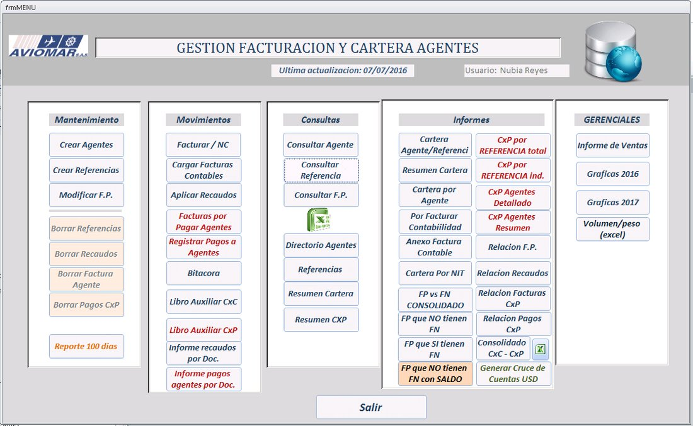
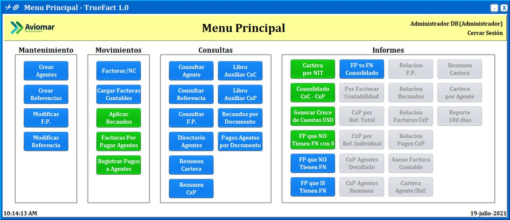

Proyecto 01
TRUE-FACT
Se contaba con una aplicación en Access para el manejo de proformas de facturas de agentes que presentaba inconsistencias y problemas de seguridad: información volátil, lentitud al generar reportes, datos no centralizados y un archivo de más de 100 MB. Se desarrolló un sistema de escritorio propio para reemplazarla.
Java
Swing
MySQL
JasperReports

